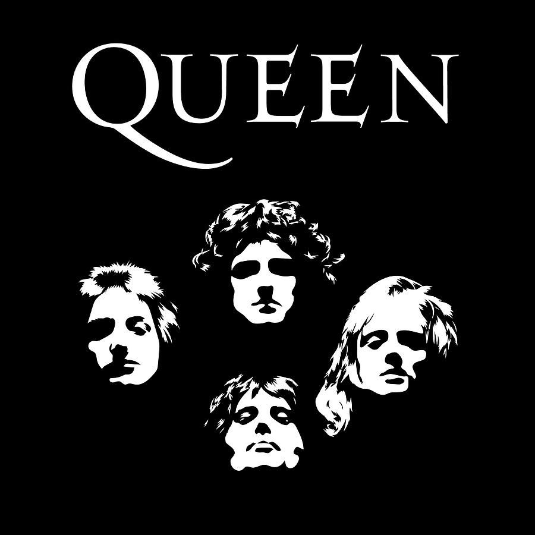
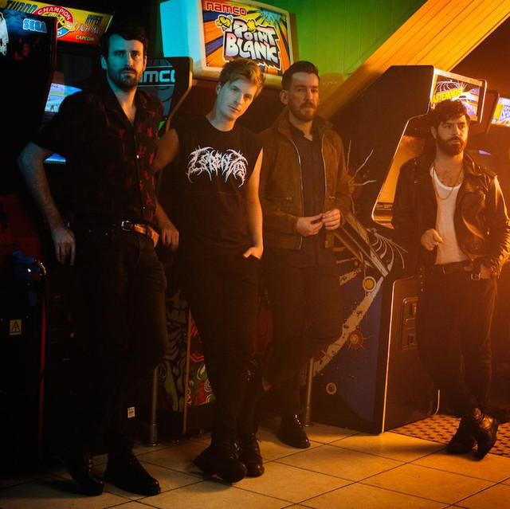

Tocando El Alma Con Tan Solo Notas

El impacto que la música puede tener sobre la sociedad actual es un tema poco discutible, la música tiene la capacidad de hacer sentir demasiadas sensaciones y emociones con tan solo la elección correcta de notas y palabras, y debido a la gran variedad de estilos musicales y temas sobre los cuales inspirarse, la música es una de las mejores formas de comunicar sensaciones.
Desde bandas míticas que han cambiado el rumbo con el cual la música se ha ido desarrollando a lo largo del tiempo, hasta one man hits que sonaron en absolutamente todos lados y rompieron el concepto de la palabra "Viral" que se tenía en ese momento, volviendola a reestructurar y reinventarla cada vez que sucedía siendo más rompedora que la anterior. Hay tantos generos que es casi imposible que no haya uno que pueda gustarle a cada persona en el mundo, ritmos tranquilos, movidos, alegres, tristes, inspiradores, rompedores, vacíos, llenos de mensaje entre líneas, etc. La variedad que se puede llegar a lograr y a veces los pocos recursos que pueden hacer que unos se diferencien de otros , con el nacimiento de un nuevo genero siempre estaba por detras un genio incomprendido con ganas de reinventar lo que la música era en ese momento para adaptarse y poder expresar lo que sentía y qué, a su pensar, muchas personas podían tener la necesidad o deseo de escuchar algo parecido, empatizando y generando un vínculo invisible desde el primer momento.
Artistas/Bandas Favoritas
Imagine Dragons
Post Malone
Khalid

Foals

Fall Out Boy

Inicios
Imagine Dragons
En 2008, el vocalista Dan Reynolds conoció al baterista Andrew Tolman en la Universidad Brigham Young, donde ambos eran estudiantes Reynolds y Tolman añadieron a Andrew Beck, Dave Lemke, y Aurora Florence para tocar la guitarra, el bajo, y el piano, respectivamente.
Foals
Jack Bevan y Yannis Philippakis, amigos desde la infancia, formaban originariamente parte de una banda de math rock llamada The Edmund Fitzgerald que se disolvió después de afirmar que las cosas habían llegado a ser «demasiado serias» y querían tener «mayor diversión realizando su música».
Khalid
Khalid Robinson nació el 11 de febrero de 1998 en Fort Stewart, Georgia. Pasó su infancia en distintos lugares de Estados Unidos, y 6 años en Heidelberg, Alemania debido a que su madre Linda trabajaba como militar.2 Su madre más tarde recibiría una oferta para cantar con la Banda del Ejército de los Estados Unidos.
Post Malone
Según Post, eligió "Post Malone" como su nombre artístico cuando tenía 14 o 15 años. Se rumoreaba que el nombre era una referencia al jugador de baloncesto Karl Malone. En realidad fue el resultado de introducir su verdadero nombre en un generador de nombres de rap en línea. A los 16 años, usando Audacity, Post creó su primer mixtape, Young and After Them Riches.
Fall Out Boy
Fall Out Boy es una banda de pop rock de Chicago, Illinois (EE. UU.), formada en 2001. La banda consta de cuatro miembros: Patrick Stump (vocalista principal, guitarra rítmica), Pete Wentz (bajista y cantante secundario), Joe Trohman (guitarrista principal) y Andrew Hurley (batería) y el grupo técnico, conformado por Johnny Thorpe y Paul Connor.